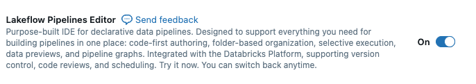

Section 3 · Data Transformation and Modelling · Quelle: Kurs 3, Kapitel 4–5
Um eine Lakeflow Declarative Pipeline zu entwickeln, kommt der neue Lakeflow Pipelines Editor (Multi-File-Editor) zum Einsatz. Er bündelt Codebearbeitung, Pipeline-Einstellungen, Graph-Visualisierung und Ausführungsdetails in einer einzigen Oberfläche – statt, wie früher üblich, ein einzelnes großes Notebook zu pflegen, wird das Pipeline-Projekt als Satz einzelner Dateien organisiert.
Statt eines einzelnen monolithischen Notebooks besteht ein modernes Pipeline-Projekt aus mehreren .sql- oder .py-Dateien (Notebooks werden weiterhin unterstützt, sind aber nicht mehr die empfohlene Struktur). Diese Dateien sind im Pipeline-Assets-Browser sichtbar und lassen sich einzeln bearbeiten, während Code in einer Datei problemlos auf Tabellen oder Views verweisen kann, die in einer anderen Datei definiert wurden. Der Editor bietet außerdem:
Ein Pipeline-Projekt lässt sich sowohl über den Dateibrowser (Create → ETL Pipeline) als auch direkt über die zentrale Jobs & Pipelines-Ansicht anlegen.

Ein Pipeline-Projekt organisiert seinen Code üblicherweise in mehreren Unterordnern, wobei genau festgelegt werden kann, welche davon tatsächlich zur Pipeline gehören:
| Ordner | Zweck |
|---|---|
exploration | Explorative Notebooks – typischerweise bewusst von der Pipeline ausgeschlossen |
orders (Beispiel) | Enthält den eigentlichen Pipeline-Code, z. B. orders_pipeline.sql |
python_excluded (Beispiel) | Alternative Implementierung, z. B. in Python statt SQL, ebenfalls ausgeschlossen |
Über einen Rechtsklick auf einen Ordner lässt sich die Option Include folder as pipeline source code umschalten – so bestimmt man präzise, welche Dateien tatsächlich als Pipeline ausgeführt werden und welche (z. B. Explorationen) außen vor bleiben.
Über das Zahnrad-Symbol im Editor öffnet sich das Einstellungsfenster der Pipeline mit folgenden zentralen Bereichen:
Das folgende Beispiel zeigt eine vollständige, dreistufige Pipeline im Medaillon-Muster: eine Streaming Table für die Rohdatenaufnahme, eine weitere Streaming Table für die Bereinigung und eine Materialized View für die Aggregation.
-- A. Bronze - Rohdatenaufnahme (Streaming Table)
CREATE OR REFRESH STREAMING TABLE orders_bronze
AS
SELECT *,
current_timestamp() AS processing_time,
_metadata.file_name AS source_file
FROM STREAM read_files(
source_volume_path || '/orders',
format => 'json'
);
-- B. Silver - Bereinigt & typisiert (Streaming Table)
CREATE OR REFRESH STREAMING TABLE orders_silver
AS
SELECT order_id,
timestamp(order_timestamp) AS order_timestamp,
customer_id,
notifications
FROM STREAM orders_bronze;
-- C. Gold - Aggregation (Materialized View)
CREATE OR REFRESH MATERIALIZED VIEW gold_orders_by_date
AS
SELECT date(order_timestamp) AS order_date,
count(*) AS total_daily_orders
FROM orders_silver
GROUP BY date(order_timestamp);
Bronze und Silver verwenden STREAMING TABLE, weil sie inkrementell verarbeiten sollen; Gold nutzt bewusst eine MATERIALIZED VIEW, da GROUP BY-Aggregationen nicht rein inkrementell berechnet werden können – Databricks optimiert die Neuberechnung dort, wo möglich, automatisch.
Vor der eigentlichen Ausführung lässt sich per Dry Run prüfen, ob der Pipeline-Code syntaktisch korrekt ist – ohne dass dabei Tabellen tatsächlich erstellt oder aktualisiert werden. Beim regulären Run bietet die Oberfläche zwei Modi:
| Update-Typ | Materialized View | Streaming Table |
|---|---|---|
| Run pipeline (Refresh) | Aktualisiert Ergebnisse für die aktuelle Abfrage; inkrementell, sofern kosteneffizienter | Verarbeitet nur neue Datensätze über Flows |
| Run pipeline with full table refresh | Vollständige Neuberechnung | Leert Daten und Checkpoints, verarbeitet alle Quelldaten neu |
Jeder inkrementelle Lauf lässt sich über DESCRIBE HISTORY nachvollziehen: In der Spalte operation erscheint bei Streaming Tables STREAMING UPDATE statt eines klassischen WRITE oder MERGE, und operationMetrics zeigt exakt, wie viele Zeilen im jeweiligen Lauf neu hinzugekommen sind – ein direkter Beleg dafür, dass wirklich nur die neuen Daten verarbeitet wurden.
transformations des Pipeline-Assets-Browsers und können Python- (.py) oder SQL-Dateien (.sql) sein – auch eine Mischung beider Sprachen innerhalb eines Projekts ist möglich, wobei Code in einer Datei problemlos auf Tabellen verweisen kann, die in einer anderen Datei definiert sind.